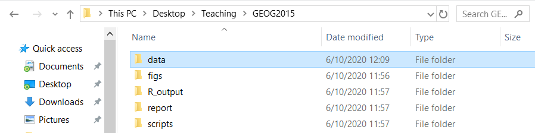

This lesson is the last of this small introduction to R! Here there will be even more practice as we will be manipulating a real dataset and you will learn some of the basic functions to inspect a dataset! For this lesson I expext you to get a good understanding of what a data frame is :)
You will learn:
R can read a wide range of data format including xlsx documents (your excell spreadsheet). One of the most common format is the XLS file. It is basically the excell document.
First, you will download the dataset available on blackboard: worldbank_df.xls. Save it in the relevant folder (remember the first lesson). For instance my main folder is GEOG2015 and I save in the subfolder data:
knitr::include_graphics('imgs_tuto/setwd.PNG')
Now that your csv file is saved in the right folder you are almost ready to read the file! Remember the first lesson about projects and working directories? If not read the section again because it is important at this very moment!
If you have made a R project (as you should have) the working directory is already set and you just need to load your data.
Otherwise you need to set the working directory with setwd. To do so click right on WorldView.csv > properties > copy paste the location in setwd() as follow:
setwd("PATH/THAT/IS/WRITTEN")Make sure you replace (that R do not understand) by /!
Now is time to open your data! For that we need to use the function read.xlsx() from the library xlsx. First you need to install the library xlsx:
install.packages('xlsx')And then load the library:
library(xlsx)Now you can open your document with the function described above.
If you are in the project write:
data <- read.xlsx("data/worldbank_df.xlsx", sheetIndex = 1)If you are not in a project write (with your own path):
setwd('//home.ansatt.ntnu.no/benjamcr/Desktop/Teaching/GEOG2015')
data <- read.xlsx('data/worldbank_df.xlsx', sheetIndex = 1)Now, this line of code doesn’t produce any output in the console because, as you might recall, assignments don’t display anything. If we want to check that our data has been loaded, we can print the variable’s value by running data. If you do that you have your whole dataset printed in your console! That is not very handy and we need to find other strategies to inspect the data frame reasonably . . . We can for instance use the function head() to inspect the firsts 6 lines:
head(data)## NA. name iso_a2 HDI urban_pop unemployment pop_growth
## 1 1 Afghanistan AF NA 8609463 NA 3.1832015
## 2 2 Angola AO 0.504 11649562 NA 3.4854125
## 3 3 Albania AL NA 1629715 17.49 -0.2070470
## 4 4 United Arab Emirates AE NA 7734365 NA 0.7147625
## 5 5 Argentina AR NA 39372787 7.27 1.0327093
## 6 6 Armenia AM NA 1825455 17.50 0.4383315
## literacy
## 1 NA
## 2 66.03011
## 3 NA
## 4 NA
## 5 NA
## 6 NAMuch better! Like this we get a good overview of the dataset without being overwhelmed by too much data!
The dataset is composed of 7 columns:
Remember how we defined a data frame in the previous lesson? Okay just a quick reminder: a data frame is a representation of data where the columns are vectors that all have the same length. Because the columns are vectors, they all contain the same type of data (e.g. numeric, characters). But the type of data can vary BETWEEN vectors!
You can inspect the structure of a data frame with the function str():
str(data)## 'data.frame': 177 obs. of 8 variables:
## $ NA. : Factor w/ 177 levels "1","10","100",..: 1 90 101 112 123 134 145 156 167 2 ...
## $ name : Factor w/ 177 levels "Afghanistan",..: 1 4 2 166 6 7 5 56 8 9 ...
## $ iso_a2 : Factor w/ 174 levels "AE","AF","AL",..: 2 5 3 1 7 4 6 152 9 8 ...
## $ HDI : num NA 0.504 NA NA NA NA NA NA NA NA ...
## $ urban_pop : num 8609463 11649562 1629715 7734365 39372787 ...
## $ unemployment: num NA NA 17.49 NA 7.27 ...
## $ pop_growth : num 3.183 3.485 -0.207 0.715 1.033 ...
## $ literacy : num NA 66 NA NA NA ...As you can see, the column name is a factor (we will se what is a factor a bit later in this lesson) while urban_pop is numeric, does that make sense?
So we already learned how to use str() and head() but there is much much more functions to inspect a dataframe! I would like you to play around with them! :)
To inspect size:
To inspect names of rows and columns:
To summarize the data frame:
Now this is a non-exhaustive list and there is more! However in my experience these are the most useful you need to know!
Small exercise: play with the functions and try to figure out what they do exactly! You can use the help from R ?
The worldbank_df dataset has two dimensions (rows and columns) and if we want to extract some specific information from it we need to specify the coordinates we want from it. It is like subsetting a matrix (remember the previous lesson!): rows come first and it is followed by column number:
data[ 1 , 1 ] #First element in the first column
data[ 1 , 3 ] #First element in the third column
data[ , 1 ] #First column
data[ 4 , ] #Fourth row
data[ 1:10 , 1 ] #Rows 1 to 10 from the first column
#And so forth and so on ... Just try to play with that!You can also subset the columns of a data frame using their names:
data[ , "name" ] # I subset the column name -> the result will be a vector!
data[ , c("name", "unemployment") ] # I subset the columns name and unemployment -> #the result will be a dataframeAnother way for subsetting columns of a data frame is using $
data$name # It is equivalent to data[ , "name" ]Exercise: create a data frame country_pop by subsetting name, urban_pop and pop_growth. Inspect this new dataframe using the functions we learned.
Often, we need to extract a subset of a data frame based on certain conditions. For instance, if I want to have a look at some specific countries . . . let’s say Norway:
data[data$name == "Norway" , ] # This line of code tells R to subset the row in which "name" equal NorwayNow if I want to create a new dataset by subsetting only France and Norway I would do like this:
NOR_FRA <- data[data$name == "Norway" | data$name == "France", ]
NOR_FRA## NA. name iso_a2 HDI urban_pop unemployment pop_growth literacy
## 56 56 France FR NA 52593947 10.30 0.5038689 NA
## 119 119 Norway NO NA 4120471 3.48 1.1277367 NAI must admit there is a much simpler way but this require a bit more knowledge about R. However doing as describe above will give you a better understanding of how the R structures work. For those who are intereseted have a look at the function filter() from the dplyr package.
I can add columns to a data frame using the cbind() function. For instance, let’s say I want to create a column “ID” which assigns a number to each country. I first create the vector and add it to the dataframe:
ID <- 1:nrow(data) #A vector going from 1 to 160 (which is the length of my data frame)
cbind(data, ID)To add rows to a data frame we need to use the function rbind().
Remember when I told you that in R there is more data type than only numeric and character? Well factor is another important type of data and deserve a section on its own!
When we did str(data) we saw that name was a factor right? Well, factors are very useful and are actually something that make R particularly well suited to working with data, so we’re going to spend a little time introducing them.
Factors are used to represent categorical data. Factors can be ordered or unordered, and understanding them is necessary for statistical analysis and for plotting.
Factors are stored as integers, and have labels (text) associated with these unique integers. While factors look (and often behave) like character vectors, they are actually integers under the hood, and you need to be careful when treating them like strings.
Once created, factors can only contain a pre-defined set of values, known as levels. By default, R always sorts levels in alphabetical order. For instance, if you have a factor with 2 levels:
sex <- factor(c("man", "woman", "woman", "man", "woman"))R will assign the value of 1 to the level man and the value 2 to the level woman. You can check this by using the functions levels() and nlevels().
levels(sex)## [1] "man" "woman"nlevels(sex)## [1] 2Sometimes the order of the factors do not matter (here that would be the same if the level woman has the value 1 but there is some cases when it is meaningful: a value of 1 for “low”, 2 for “moderate” and 3 for “high” would make sense.
It is possible to reorder the levels of a vector:
sex #gives the current order of the levels## [1] man woman woman man woman
## Levels: man womansex <- factor(sex, levels = c('woman','man')) # I reorder
sex # after re ordering## [1] man woman woman man woman
## Levels: woman manSometimes, R open that dataframe and thinks one of the column is a factor while in reality it is not (such as it is the case for name here). In these cases we need to convert the data type
If you need to convert a factor vector to a character vector use the function as.character()
as.character(data$name)If you need to convert factors where the levels appear as numbers (such as dates) to a numeric vector you need to first convert factors to character and then numbers:
dates <- factor(c(1500,1600,1700,1800,1900,2000))
as.numeric(as.character(dates)) #Looks a bit complicated but works well## [1] 1500 1600 1700 1800 1900 2000As usual you have a task to complete! This task may take a bit more time and research but I am sure you are able to complete it :)
We discovered a new country whom name is “Wakanda”! Using all your previous knowledge add a new row to the data frame. the iso_a2 code for Wakanda is “WA” and you can choose the other values (you can choose to make Wakanda a very litterate country or not for instance)
You made it until the end of this -short- tutorial about R! While I tried to be concise keep in mind that R is much much more than what you learned! However, this tutorial will give you the basics to handle to most common data structures that you will find.
In the exercises we will learn much more things, and especially how to turn R into a GIS software!